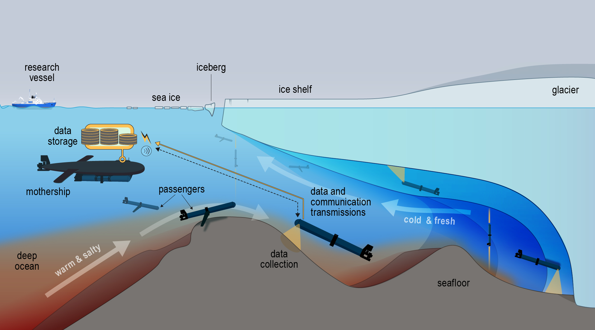

Multi-Robot Coordination Under Communication Constraints with Mothership-Passenger Systems
To appear in Frontiers in Robotics and AI
Journal

Abstract
Multi-robot coordination under communication constraints is a fundamental challenge in autonomous systems, particularly in underwater environments where low-bandwidth acoustic links restrict centralized planning and limit decentralized information propagation. This work explores a "Mothership–Passenger" paradigm in which a capable underwater vehicle deploys and coordinates many lower-cost autonomous robots, enabling broad spatial coverage while reducing mission risk and cost. We present two algorithms that tightly couple hierarchical guidance with decentralized planning to improve coordination efficiency under these constraints. The first integrates centralized and decentralized solutions to an underwater multi-robot orienteering problem, enabling globally coherent yet locally adaptive coordination among robots operating under stochastic travel costs and mission disruptions. The second introduces a learned policy on a Mothership vehicle that adaptively configures individual robot priorities, allowing globally informed guidance to shape local planning under communication and resource constraints. Through simulation and field experiments at an inland lake, we demonstrate that these contributions significantly improve coordination efficiency and robustness compared to fixed-behavior and fully decentralized baselines. These advances are directly motivated by the long-term goal of deploying coordinated robotic teams in isolated environments such as under-ice ocean regions, where the coordination and communication constraints studied here are most acute.